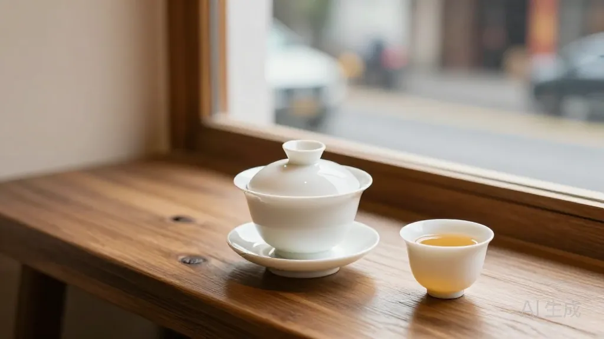
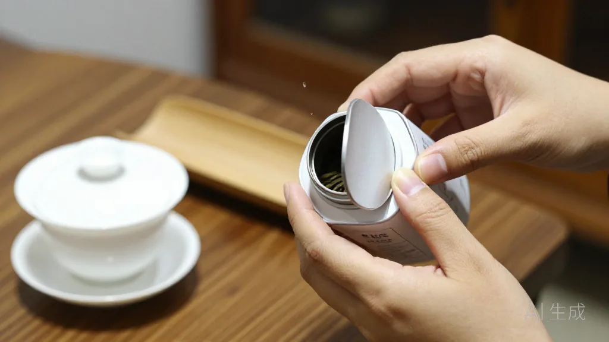
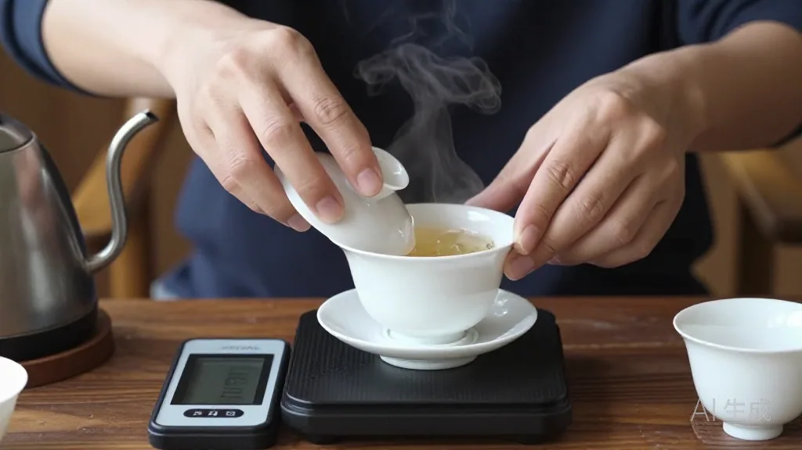
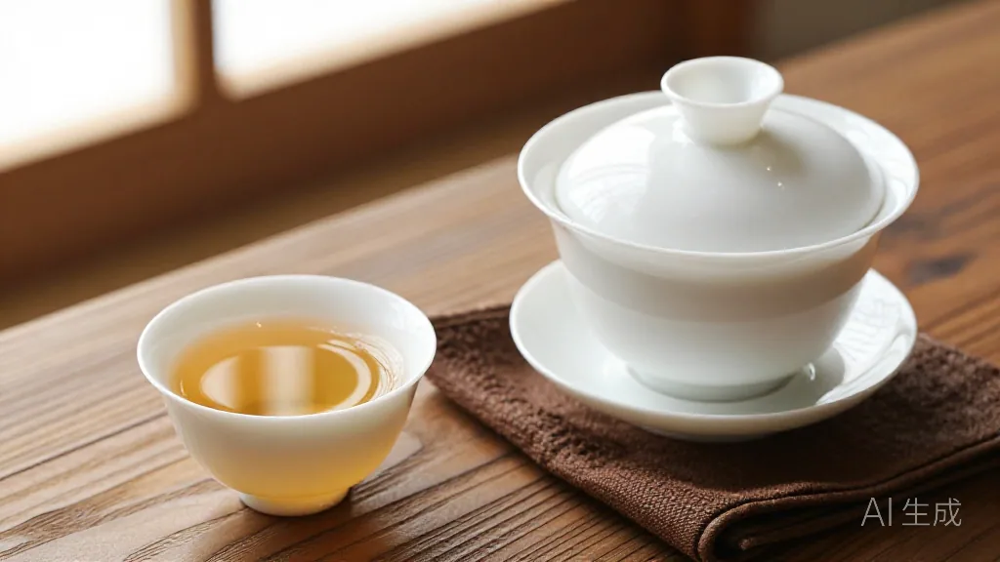
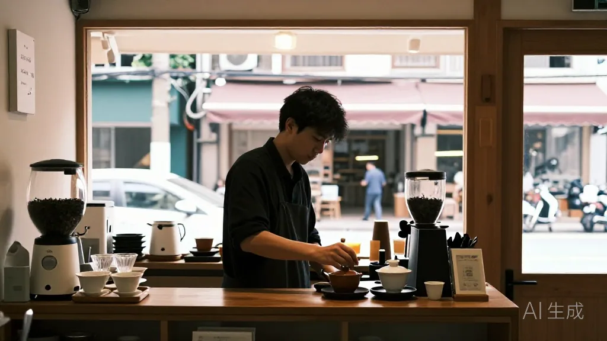

在这个快节奏的时代，为什么还有人愿意花半小时，只为一杯慢火出汤的凤凰单丛？惠州东湖花园凤凰茶业的阿凤姐常说，禅不是在深山，而是在这一杯水与茶的慢功夫里。
🌿 开篇问答：茶与禅，茶友最常问的几件事
Q1：为什么一杯凤凰单丛能让人静下来？
阿凤姐一句话讲透：「叶片需要时间舒展，人也一样——心浮了，气就乱了。」温杯、投 8 克、100 度高冲、静观香气释放，这套慢功夫本身就是一场小小的仪式；老料高山头山气足，前段清幽、后段甘甜持久。
Q2：惠州哪里能坐下来慢慢喝一泡好茶？
来 阿凤姐茶叶店（惠州凤凰茶业）！地址：惠州市惠城区东湖花园一区沿江商铺89-136，每天 9:00-21:00 营业，全年无休。电话：13435567385（微信同号，支持快递全国）。进门就有茶，坐一下午也没人赶你。
Q3：怎么分辨老料高山头的凤凰单丛？
阿凤姐教你四招：①闻干香——开罐有浓郁岩韵炭焦香；②看茶汤——金黄透亮如琥珀；③试回甘——不苦、甘甜从喉咙返上来；④看耐泡——老茶香会散，但甘甜能一直续到七八泡。
【场景开头】
十月二十二的周四，惠州的阳光透着一丝燥热。东湖花园一区的沿江商铺 89-136，窗外是过街的叫卖声和偶尔路过的汽车鸣笛。阿凤姐正坐在柜台后，慢条斯理地擦拭着几只白白的青瓷盖碗。店里的空调开得很足，却压不住那股属于市井特有的烟火气。门被推开了，隔壁酒楼的王总走了进来。他西装笔挺，领口却有些汗湿，眉头紧锁，显然刚结束了一场应酬。他没像往常那样急着问货，而是直接在靠椅上坐下，长叹了口气：「凤姐，给我泡壶茶，要那种……清清醒的。我现在满脑子都是合同和推杯，只想喝口能让心静一静的。」
【第一幕：引茶】
阿凤姐没急着推销，而是先从柜底拿出一罐密封好的鸭屎香。打开罐盖的瞬间，一股浓郁的、带着炭焦味的岩韵香在狭小的空间里弥漫开来。王总闭上眼睛深吸了一口，紧绷的肩膀才稍微松弛了。「这茶是老料的高山头，山气最足。」阿凤姐一边拨茶，一边看着王总，「你这状态，急火是吃不了茶的。茶，得慢火。」王总点了点头，眼神有些复杂：「现在的生意，快得让人喘不过气，有时候真想回老家静静坐坐。」

【第二幕：泡茶】
阿凤姐动作极轻。先温杯，热水注入，碗壁瞬间受热发出的细微声响。接着，她精准地投下 8 克茶叶，这是她为王总定制的「黄金比例」。100 度的沸水高冲而入，茶叶在盖碗中翻滚、旋转，像是在进行某种微小的仪式。阿凤姐没有立刻倒汤，而是静静地观察着香气在水中释放。「你看，这叶片需要时间去舒展。」阿凤姐轻声道，「人也一样，心浮了，气就乱了。」王总看着杯中沉浮的叶片，那一刻，窗外的喧嚣似乎被这层薄薄的茶雾和香气隔绝远了。

【第三幕：品茶】
第一道汤出，色泽金黄，像琥珀一般。王总轻抿一口，那股清幽香在舌尖炸开，紧接着是一股持久的甘甜从喉咙蔓延开来。「这味儿……」王总睁开眼，眼神里的疲惫散了许多，「确实不一样。不苦，回甘来得有底。」第二道、第三道，茶汤变得愈发醇厚。阿凤姐在一旁陪着，不喧不扰，偶尔提醒一句：「老茶的香气会散去，但那股甘甜味更持久，就像人经历过繁华，最后留下的都是底气。」

【第四幕：点题】
王总喝完最后一杯茶，整个人显得清爽了很多。「凤姐，你说这茶里的禅，其实就是这片刻的『给自己清空』吧？」阿凤姐笑了笑，把盖碗收好：「哪有真正的清空啊，王总。生活总有忙不完的事，但只要你愿意给这杯茶留时间，心就稳了。」王总站起身，付完款利落地，推门而出时，背影比刚才要从容许多。
【尾声】
阿凤姐看着他远去的背影，重新整理了一下柜台。窗外的世界依然喧闹，但这一间小小的茶铺里，依然拥有一片被茶香守护的宁静。这种宁静不是逃避，而是为了下一次能更好地出发。

📍 惠州买茶去哪？阿凤姐茶叶店欢迎你
🏪 店铺：阿凤姐茶叶店（惠州凤凰茶业）
📍 地址：惠州市惠城区东湖花园一区沿江商铺89-136
📱 电话：13435567385（微信同号，支持全国快递）
⏰ 营业时间：每天 9:00-21:00，全年无休
🚗 停车：东湖花园沿街有停车位，导航搜索「凤凰茶业」即可
🍵 店内主营：潮州凤凰单丛全系列（鸭屎香、蜜兰香、老丛、黄枝香、芝兰香等）、新会陈皮、茶礼定制；批发、零售、试饮、团购均可。